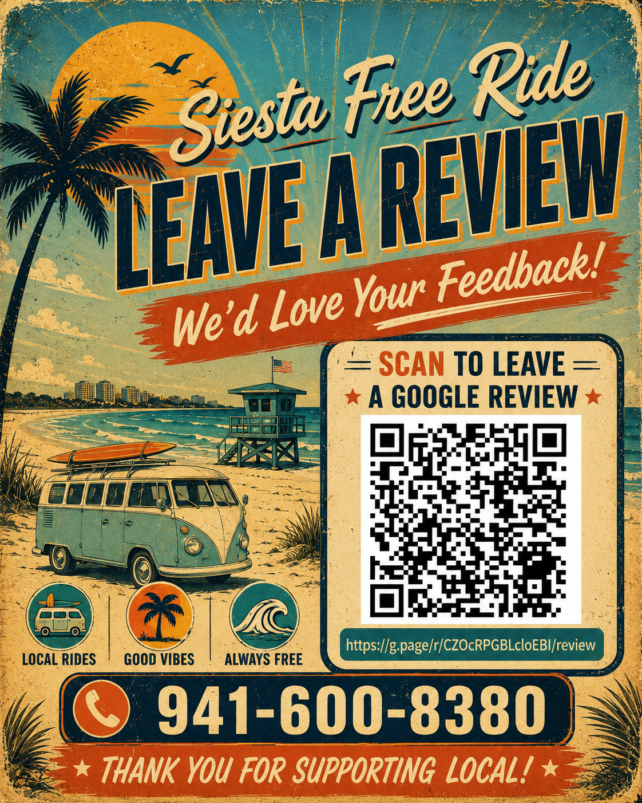

★★★★★
“I have ridden all the shuttles on Siesta Key, and Siesta Free Ride was by far the most comfortable and cleanest of them all. The air-conditioning works great and the drivers were very helpful getting us around. I will see again in October.”
Free rides on Siesta Key
What riders remember
Local recommendations, prompt pickups and a person riders feel comfortable calling again.
A cool, comfortable break between the beach, Village, airport and every island stop.
No circling for parking, no surge pricing and no stress connecting plans around the Key.

Help another visitor find us
Your review helps Siesta Key visitors discover our friendly, tips-appreciated ride service. Scan the code or use the button to open Google Reviews.
Leave a Google review →Thank you for supporting local.Always free • Tips appreciated
Our rides are free. If a driver made your day easier, a tip helps keep friendly local transportation moving around Siesta Key.
Tip via Venmo →